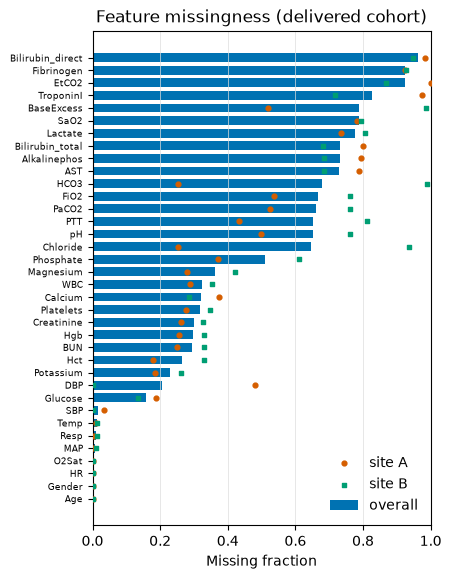
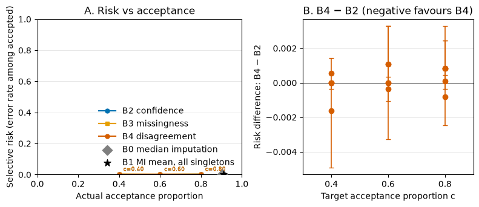
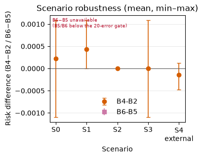
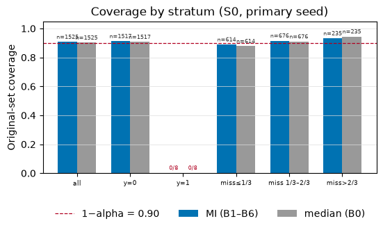
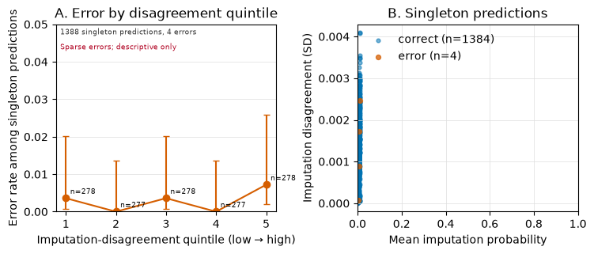
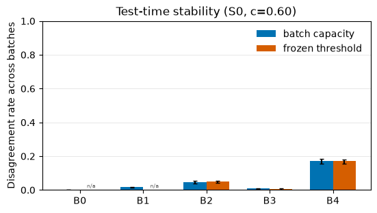

Status: Prepared 2026-11-06 from run 20261105T055420_02d05b15 under the C/E accepted_with_limits record. The record allows figures/tables and bounded descriptive writing, but explicitly does not accept a final manuscript, PDF, or submission. Do not submit this file without C/E final consistency review, official template/page-limit checks, and A鈥檚 license decision.
Working title: Imputation Disagreement for Selective Prediction under Missing Clinical Data: A Conformal Rejection Study
Authors: [to be confirmed by the group]
Background. Clinical prediction models routinely face incomplete measurements. Multiple imputation (MI) replaces missing values with several plausible completions, so one patient can receive different predictions across draws. Whether this imputation-induced disagreement identifies erroneous predictions beyond confidence or missingness is unclear.
Methods. We used the PhysioNet/Computing in Cardiology Challenge 2019 data (Reyna et al., 2020), with a 12-hour feature window and an outcome in the subsequent 12 hours after restoring the challenge鈥檚 6-hour label lead. Hospital A provided training, rule-selection, calibration and internal-test partitions; hospital B was held out for external testing. A stochastic chained-equation imputer generated ten completed versions per patient, and a shared logistic-regression classifier was trained across the completed records. Split conformal prediction (Angelopoulos & Bates, 2023; Zaffran et al., 2023) defined singleton candidate sets; only singleton sets entered the automatic pool. At a prespecified capacity, we compared confidence, missingness, imputation disagreement, and two error-risk rankings. The primary contrast was B4鈭払2 at a 0.60 target; the conditional-increment contrast was B6鈭払5.
Results. The cohort contained 24,095 patients (A 10,174; B 13,921), with 57 and 38 positive outcomes, respectively; the internal test contained 1,525 patients and 8 positives [S-001]. At the 0.60 target, primary seed 2026, S0, B2 accepted 915 patients with 1 error and B4 accepted 915 with 2 errors; the B4鈭払2 risk difference was +0.00109290 (95% interval 0.00000000 to 0.00327869) [S-002, S-003]. In the external hospital, B2 accepted 8,352 with 24 errors and B4 accepted 8,352 with 21; the difference was 鈭?.00035920 (鈭?.00107759 to 0.00035920) [S-005, S-013]. The direction was not stable across seeds and scenarios. B5/B6 were unavailable because the rule-selection partition had 6 errors and 1,012 correct cases [S-004]. MI positive-class coverage was 0/8 internally [S-006]. A disagreement diagnostic among 1,388 singleton predictions contained only 4 errors [S-007].
Conclusions. The formal run reproduces the candidate arithmetic but does not support a stable disagreement advantage or clinical safety claim. The defensible conclusion is a limited or null finding under finite-event conditions.
Intensive care measurements are collected asynchronously and incompletely. A model that predicts deterioration from the first 12 hours therefore depends on how missing values are handled. Multiple imputation represents uncertainty about missing values rather than committing to one completed dataset, but its practical by-product is that predictions can vary across plausible completions. Two patients with the same mean predicted risk may differ in how sensitive that risk is to the completion.
Selective prediction offers a way to defer uncertain cases to human review. Conformal prediction provides distribution-free marginal coverage for prediction sets (Angelopoulos & Bates, 2023), and recent work connects conformal sets with cost-aware deferral in clinical triage (Kwon & Kim, 2026). Missing values complicate this pipeline: conformal prediction with missing values has been studied (Zaffran et al., 2023), conformal selection has been applied to clinical imputation with false-discovery-rate control (He et al., 2026), and modality-conditional calibration has been proposed for missing-modality diagnosis (Wong & Ajit, 2026). Uncertainty-aware sequence models for sparse healthcare time series use imputation and weighted evidential regression (Vavaroutas et al., 2025).
These lines of work leave a practical question open. Confidence is the model鈥檚 self-assessment; missingness describes how much data are absent; imputation disagreement describes how much the prediction moves across plausible completions. A fair comparison must hold the predictor, imputation draws, conformal threshold, candidate pool and number of automatically accepted patients fixed. It must also report what happens when the singleton pool is smaller than the target capacity.
This study asks whether imputation disagreement provides incremental information for selective prediction beyond confidence and missingness under a shared MI predictor and conformal rejection. We evaluate this question at a prespecified acceptance capacity, across natural and induced missingness, and in an external hospital. The contributions are:
We do not propose a new conformal guarantee, a new imputer, or a causal explanation of missingness. The object of study is a decision-layer signal: whether disagreement across MI draws improves the ranking of patients for automatic acceptance at a fixed capacity.
Split conformal prediction constructs prediction sets with finite-sample marginal coverage under exchangeability (Angelopoulos & Bates, 2023). In clinical settings, coverage alone is insufficient: a retained subset can have a different error rate from the full test population, and deferral decisions have asymmetric costs. Cost-aware deferral with conformal sets has been evaluated for clinical triage under distribution shift (Kwon & Kim, 2026). Our work uses the same split-conformal construction but treats the post-calibration acceptance step as the object of study: which patients enter the automatic pool at a fixed capacity, and whether imputation disagreement improves that ranking.
Conformal prediction with missing values has been analyzed for impute-then-predict pipelines (Zaffran et al., 2023). Conformal selection has also been applied to clinical data imputation, using conformal p-values and false-discovery-rate control to decide which imputed values are acceptable (He et al., 2026). At the modality level, modality-conditional conformal calibration stratifies by the available modality combination and restores per-stratum coverage without retraining the predictor (Wong & Ajit, 2026). Our question is different in level: those works address the validity or selection of imputed values, or missingness of whole modalities, whereas we ask whether patient-level variation across variable-level MI draws is useful for deciding which predictions to automate. We treat MI as a practical stochastic procedure with explicit clipping and reproducibility rules, not as a recovery of the true missing-data distribution.
Evidential deep learning with spline-based imputation and weighted observed/imputed points has been proposed for sparse healthcare time series (Vavaroutas et al., 2025). That line of work estimates uncertainty within a sequence model. Our design instead fixes a shared tabular predictor and measures disagreement across repeated imputations; the two signals are related but not interchangeable.
The closest clinical work combines conformal sets with cost-aware deferral (Kwon & Kim, 2026); the closest missing-data work studies conformal prediction, conformal imputation, and modality-conditional calibration (Zaffran et al., 2023; He et al., 2026; Wong & Ajit, 2026). Our incremental question is whether variable-level imputation disagreement adds information beyond confidence and missingness at the same acceptance capacity. We do not claim to be the first to handle missing clinical data, and we do not claim that disagreement is a superior uncertainty measure in general.
We use the PhysioNet/Computing in Cardiology Challenge 2019 data (Reyna et al., 2020). The prediction time is ICU hour 12; inputs use observations up to and including hour 12. The challenge label is advanced by six hours relative to the dataset-defined sepsis onset. We restore onset as the first observed 0-to-1 transition plus six hours; patients already onset by hour 12 are excluded; records whose first observation is already positive are not assigned a precise onset. The outcome is y = 1 if and only if 12 < onset <= 24, and y = 0 otherwise within the observation window. This is the dataset-defined endpoint, not real-time clinician adjudication.
Hospital A is split at the patient level into training (60%), rule-selection (10%), calibration (15%) and internal test (15%), stratified by outcome. Hospital B is held out entirely for external testing. Five fixed seeds (2026鈥?030) are used; 2026 is the primary seed. Cohort counts, exclusions and positive counts are reported in Table 1 [S-001]; label and boundary audit is owned by A and independently checked by C.
The input space contains 34 physiological/laboratory variables plus Age and Gender, with missingness indicators for all 36 inputs. A stochastic chained-equation imputer with Bayesian ridge conditional models is fitted on training inputs only; the outcome is never passed to the imputer. Ten iterations and M=10 completed versions are used. Values generated at missing positions are clipped to the training-observed range; observed values are preserved. Variables entirely missing in training are removed from the numerical inputs while their indicators are retained.
A single logistic-regression classifier is trained on the M completed copies with weight 1/M per copy. The regularization parameter is selected from 0.1, 1 and 10 by average precision on the rule-selection partition, with ties resolved toward the smaller value. A random forest with 300 trees is used as a robustness check. For each patient, p_mean is the mean predicted positive probability across draws and D is the sample standard deviation (ddof=1); a flip indicates predictions on both sides of 0.5. Replicates are never treated as independent patients.
The nonconformity score for candidate label y is 1 - p_mean(y). The split-conformal threshold at level alpha = 0.10 is the ceil((n+1)(1-alpha))-th ordered calibration score; if the index exceeds the calibration size, the threshold is infinite. Empty and two-label sets are rejected; only singleton sets enter the automatic pool. Coverage is evaluated over all test patients, including empty sets.
At target acceptance c in {0.40, 0.60, 0.80}, the number accepted is K = min(floor(cN), N_single), where N is the test size and N_single is the singleton-pool size. B2鈥揃6 share the pool and K. Ties are broken by a fixed hash of patient identifiers, never by labels. If the pool is smaller than the target, the actual accepted count and shortfall are reported; accepting the whole pool must not be interpreted as a ranking difference. A frozen-threshold deployment analysis is reported separately, and its realized acceptance may differ.
| ID | Strategy | Ranking score |
|---|---|---|
| B0 | Training-median imputation + same classifier + independent conformal calibration | none (accept all singletons) |
| B1 | MI mean + conformal, accept all singletons | none |
| B2 | Confidence | 1 - max(p_mean, 1 - p_mean) ascending |
| B3 | Missingness burden | fraction missing among the 34 physiological variables, ascending |
| B4 | Imputation disagreement | D ascending |
| B5 | Error-risk model | logistic regression on confidence and missingness, fitted on the rule-selection partition |
| B6 | Error-risk model with disagreement | B5 inputs plus D |
B5/B6 use all rule-selection patients, the base classification error at p_mean >= 0.5 as the target, L2 logistic regression with C=1, and no additional tuning. If the rule-selection partition has fewer than 20 errors or fewer than 20 correct predictions, the model is unavailable and the conditional-increment conclusion is limited accordingly.
Acceptance is the number accepted divided by all test patients. Selective risk is the number of accepted errors divided by the number accepted. Dangerous miss is the number of true positives that are accepted and predicted negative, divided by all true positives. Negative residual risk is the number of true positives among accepted negative predictions, divided by accepted negative predictions. Original-set coverage is the fraction of patients whose true label is in the original conformal set. Zero denominators are reported as NA with counts.
The primary contrast is B4 minus B2 selective risk at c=0.60; negative values favor B4. The conditional increment is B6 minus B5. Intervals use 1,000 patient-level paired bootstrap resamples; capacity allocation is recomputed within each resample, preserving paired method outputs. Five seeds describe full-pipeline stability and are not five independent clinical cohorts. Coverage is also reported by class and missingness stratum.
S0 is natural missingness. S1 and S2 additionally hide 10% and 30% of originally observed physiological values at test time. S3 hides the laboratory block (official columns 9鈥?4). S4 is the external hospital with natural missingness. Training and calibration remain at S0; the same patients and masks are shared across methods; indicators and missingness fractions are recomputed after hiding. Stress tests are not causal models of missingness mechanisms.
Sensitivity analyses include a random forest on S0/S2, M=5/10/20 on S0, alpha=0.05 on S0/S2, and five test-imputation batches for three-state decision stability. These are secondary and do not replace the primary contrast.
Each run is immutable and stores a manifest with source, data and split hashes. scripts/make_figures.py verifies the manifest and every artifact hash, refuses synthetic runs unless explicitly rendered as watermarked QA, and refuses clinical runs without a C/E-signed acceptance record matching the run鈥檚 manifest. Every manuscript number maps to paper/source_index.md and a generated table or figure-data CSV. No result number is typed by hand.
Data version, cohort size, positive counts and missingness summaries are in Table 1 [S-001, S-009]. The primary analysis uses seed 2026, logistic regression, M=10 and alpha=0.10; seeds 2027鈥?030 are stability checks. The formal result bundle is b-clinical-v1-20261104-r1; the accepted run is 20261105T055420_02d05b15. Synthetic and candidate runs are excluded from paper results.
The cohort contains 24,095 patients: 10,174 from hospital A and 13,921 from hospital B. The target outcome is observed in 95 patients overall (A 57; B 38). The 2026 internal test partition contains 1,525 patients with 8 positives. The prespecified precision gates (200 positives per site; 50 internal-test positives) are not met, so all results are limited to a finite-event analysis. [S-001, S-009]
Feature missingness is highest for Bilirubin_direct, Fibrinogen, EtCO2, TroponinI and BaseExcess; full values are in Table 1b. [S-009]
At the 0.60 target, batch mode, primary seed 2026, S0:
[0.00000000, 0.00327869]). [S-002, S-003]At the external hospital (S4):
[鈭?.00107759, 0.00035920]. [S-005, S-013]The direction is unstable across seeds and scenarios; the result does not support a stable advantage for B4. [S-005]
B5 and B6 are unavailable because the rule-selection partition has 6 errors and 1,012 correct cases, below the 20/20 threshold. B6鈭払5 is NA, not zero. [S-002, S-004]
Across S0鈥揝4 and five seeds, the B4鈭払2 difference is small and changes sign. For S0, the mean difference is +0.00021858 (min 鈭?.00109290, max +0.00109290); for S4 it is 鈭?.00014368 (min 鈭?.00047893, max +0.00011973). [S-005]
MI original-set coverage is high overall (about 0.907 in the primary S0 condition), but positive-class (y=1) coverage is 0/8. Overall coverage must not be presented as positive-class safety or as evidence that high-risk patients are protected. [S-006]
Among 1,388 singleton predictions at the primary condition, only 4 are errors. Error counts by disagreement quintile are 1/278, 0/277, 1/278, 0/277 and 2/278. The figure is annotated 鈥淪parse errors; descriptive only.鈥?[S-007]
Test-time three-state disagreement is reported for batch and frozen allocation in Table 5. It is a stability diagnostic, not evidence of clinical safety. [S-008]
The supplement run 20261105T055445_54dd08de is accepted with limits for RF (S0/S2), M=5/10/20 (S0) and alpha=.05 (S0/S2). Tables S1鈥揝3 report these sensitivity analyses with B4鈭払2 batch/frozen contrasts; they do not replace the primary analysis and do not establish a stable advantage. [S-010]
The formal run does not show a stable disagreement advantage. The primary S0 difference is small and positive, the external S4 difference is small and negative, and the direction changes across seeds and scenarios. The B5/B6 conditional-increment analysis could not be estimated because the rule-selection partition contained only 6 errors. The disagreement diagnostic contained only 4 errors among 1,388 singleton predictions, so it cannot support a strong mechanism claim.
These findings should be interpreted through the finite-event setting. Hospital A had 57 positives, hospital B had 38, and the internal test had 8 positives per seed. MI positive-class coverage was zero in every planned setting. Overall coverage is not a substitute for positive-class safety. The result is therefore a limited or null finding, not evidence that disagreement improves selective risk or protects high-risk patients.
The capacity-constrained design reflects a batch allocation problem, not a fixed per-patient deployment rule. Realized acceptance and dangerous misses matter as much as selective risk. External and missingness-shift evaluations are empirical; standard conformal marginal coverage does not extend to the accepted subset or shifted populations.
Limitations include: one public retrospective dataset; two hospitals; no prospective evaluation; complete 24-hour follow-up induces a restricted cohort; the 6-hour label restoration and first-observation-positive handling limit onset precision; MI is a practical stochastic procedure, not a true posterior; the analysis uses a single tabular predictor family with a random-forest robustness check; capacity evaluation is batch-level; missingness scenarios are stress tests, not causal mechanisms; and event counts limit precision and the availability of B5/B6. C has not independently replayed all 40,336 raw PSV records, and the source-license metadata conflict remains unresolved.
We do not claim clinical benefit, deployment readiness, cost-effectiveness, or that disagreement is universally superior to confidence or missingness.
In this finite-event formal run, imputation disagreement did not show a stable selective-risk advantage over confidence or missingness, and the positive-class coverage result was zero. The appropriate conclusion is a limited or null finding under the prespecified protocol. Prospective evaluation with prespecified capacity, per-site calibration, and adequate positive-event counts is needed before clinical use.
Reproducibility. Code, configurations, tests and run manifests are versioned; large artifacts are distributed with SHA256 checks. Figures and tables are regenerated by scripts/make_figures.py from an immutable run and a signed acceptance record.
Data availability. PhysioNet 2019 data are available under the dataset鈥檚 access terms; no raw patient data are included in the repository.
Ethics. Secondary analysis of de-identified public data under the dataset鈥檚 data use agreement.
AI use disclosure. Follow the workshop rule verified by C-002; disclose assistance if required.
Author contributions. A: data and labels; B: methods and experiments; C: literature and independent audit; D: figures and manuscript integration; E: coordination and integrity. The corresponding author is confirmed by the group.
Boundary: This is a bounded descriptive draft under accepted_with_limits, not a final manuscript or submission. C/E final consistency review, official template/page-limit verification, and A鈥檚 license decision remain required.






| site | n | positives | base_rate | included | excluded |
|---|---|---|---|---|---|
| A | 10174 | 57 | 0.00560252 | 24095 | 16241 |
| B | 13921 | 38 | 0.00272969 | 24095 | 16241 |
| method | status | target_acceptance | accepted | acceptance | selective_risk | dangerous_miss | negative_residual | coverage | pool_size |
|---|---|---|---|---|---|---|---|---|---|
| B0 | available | 1380 | 0.904918 | 0.00289855 | 0.5 | 0.00289855 | 0.902295 | 1380 | |
| B1 | available | 1388 | 0.910164 | 0.00288184 | 0.5 | 0.00288184 | 0.907541 | 1388 | |
| B2 | available | 0.6 | 915 | 0.6 | 0.0010929 | 0.125 | 0.0010929 | 0.907541 | 1388 |
| B3 | available | 0.6 | 915 | 0.6 | 0.00218579 | 0.25 | 0.00218579 | 0.907541 | 1388 |
| B4 | available | 0.6 | 915 | 0.6 | 0.00218579 | 0.25 | 0.00218579 | 0.907541 | 1388 |
| B5 | unavailable | 0.6 | |||||||
| B6 | unavailable | 0.6 |
| comparison | target_acceptance | selection_mode | risk_difference | ci_low | ci_high | valid | invalid |
|---|---|---|---|---|---|---|---|
| B4-B2 | 0.6 | batch | 0.0010929 | 0 | 0.00327869 | 1000 | 0 |
| B4-B2 | 0.6 | frozen | 0.00106703 | -6.78777e-05 | 0.00326087 | 1000 | 0 |
| scenario | selection_mode | method | accepted | accepted_errors | selective_risk | risk_difference | ci_low | ci_high |
|---|---|---|---|---|---|---|---|---|
| S4 | batch | B2 | 8352 | 24 | 0.00287356 | |||
| S4 | batch | B4 | 8352 | 21 | 0.00251437 | |||
| S4 | batch | B4-B2 | -0.000359195 | -0.00107759 | 0.000359195 | |||
| S4 | frozen | B4-B2 | 0.000174967 | -0.000171218 | 0.00051947 |
| scenario | comparison | seeds | mean | min | max |
|---|---|---|---|---|---|
| S0 | B4-B2 | 5 | 0.000218579 | -0.0010929 | 0.0010929 |
| S1 | B4-B2 | 5 | 0.000437158 | 0 | 0.0010929 |
| S2 | B4-B2 | 5 | 0 | 0 | 0 |
| S3 | B4-B2 | 5 | -8.67362e-20 | -0.0010929 | 0.0010929 |
| S4 | B4-B2 | 5 | -0.000143678 | -0.000478927 | 0.000119732 |
| predictor | stratum | n | covered | coverage |
|---|---|---|---|---|
| MI | all | 1525 | 1384 | 0.907541 |
| MI | y=0 | 1517 | 1384 | 0.912327 |
| MI | y=1 | 8 | 0 | 0 |
| MI | missing_0_1/3 | 614 | 546 | 0.889251 |
| MI | missing_1/3_2/3 | 676 | 619 | 0.91568 |
| MI | missing_2/3_1 | 235 | 219 | 0.931915 |
| median | all | 1525 | 1376 | 0.902295 |
| median | y=0 | 1517 | 1376 | 0.907053 |
| median | y=1 | 8 | 0 | 0 |
| median | missing_0_1/3 | 614 | 539 | 0.87785 |
| median | missing_1/3_2/3 | 676 | 615 | 0.909763 |
| median | missing_2/3_1 | 235 | 222 | 0.944681 |
| method | selection_mode | mean_disagreement | min_disagreement | max_disagreement | pairs |
|---|---|---|---|---|---|
| B0 | batch | 0 | 0 | 0 | 10 |
| B1 | batch | 0.016 | 0.0131148 | 0.0183607 | 10 |
| B2 | batch | 0.0478689 | 0.0393443 | 0.0537705 | 10 |
| B2 | frozen | 0.0490492 | 0.0406557 | 0.055082 | 10 |
| B3 | batch | 0.00786885 | 0.00393443 | 0.0104918 | 10 |
| B3 | frozen | 0.00655738 | 0.00327869 | 0.00786885 | 10 |
| B4 | batch | 0.171803 | 0.157377 | 0.184918 | 10 |
| B4 | frozen | 0.169836 | 0.15541 | 0.180328 | 10 |
| kind | method | scenario | target_acceptance | selection_mode | accepted | selective_risk | risk_difference | ci_low | ci_high |
|---|---|---|---|---|---|---|---|---|---|
| method | B0 | S0 | batch | 1351 | 0.00518135 | ||||
| method | B1 | S0 | batch | 1377 | 0.00508351 | ||||
| method | B2 | S0 | 0.6 | batch | 915 | 0.00437158 | |||
| method | B3 | S0 | 0.6 | batch | 915 | 0.00437158 | |||
| method | B4 | S0 | 0.6 | batch | 915 | 0.00655738 | |||
| contrast | B4-B2 | S0 | 0.6 | batch | 0.00218579 | -0.00218579 | 0.00655738 | ||
| contrast | B4-B2 | S0 | 0.6 | frozen | 0.00187666 | -0.00169787 | 0.00703751 | ||
| method | B0 | S2 | batch | 1400 | 0.005 | ||||
| method | B1 | S2 | batch | 1296 | 0.00540123 | ||||
| method | B2 | S2 | 0.6 | batch | 915 | 0.00437158 | |||
| method | B3 | S2 | 0.6 | batch | 915 | 0.00546448 | |||
| method | B4 | S2 | 0.6 | batch | 915 | 0.00655738 | |||
| contrast | B4-B2 | S2 | 0.6 | batch | 0.00218579 | 0 | 0.00546448 | ||
| contrast | B4-B2 | S2 | 0.6 | frozen | -0.000320511 | -0.00580324 | 0.00451515 |
| kind | method | M | source_M | target_acceptance | selection_mode | accepted | selective_risk | risk_difference | ci_low | ci_high |
|---|---|---|---|---|---|---|---|---|---|---|
| method | B0 | 1 | 5 | batch | 1380 | 0.00289855 | ||||
| method | B1 | 5 | 5 | batch | 1387 | 0.00216294 | ||||
| method | B2 | 5 | 5 | 0.6 | batch | 915 | 0.0010929 | |||
| method | B3 | 5 | 5 | 0.6 | batch | 915 | 0.00218579 | |||
| method | B4 | 5 | 5 | 0.6 | batch | 915 | 0.00218579 | |||
| contrast | B4-B2 | 5 | 5 | 0.6 | batch | 0.0010929 | 0 | 0.00327869 | ||
| contrast | B4-B2 | 5 | 5 | 0.6 | frozen | 0.000976193 | -0.000197998 | 0.00308424 | ||
| method | B0 | 1 | 10 | batch | 1380 | 0.00289855 | ||||
| method | B1 | 10 | 10 | batch | 1388 | 0.00288184 | ||||
| method | B2 | 10 | 10 | 0.6 | batch | 915 | 0.0010929 | |||
| method | B3 | 10 | 10 | 0.6 | batch | 915 | 0.00218579 | |||
| method | B4 | 10 | 10 | 0.6 | batch | 915 | 0.00218579 | |||
| contrast | B4-B2 | 10 | 10 | 0.6 | batch | 0.0010929 | 0 | 0.00327869 | ||
| contrast | B4-B2 | 10 | 10 | 0.6 | frozen | 0.00106703 | -6.78777e-05 | 0.00326087 | ||
| method | B0 | 1 | 20 | batch | 1380 | 0.00289855 | ||||
| method | B1 | 20 | 20 | batch | 1389 | 0.00215983 | ||||
| method | B2 | 20 | 20 | 0.6 | batch | 915 | 0.0010929 | |||
| method | B3 | 20 | 20 | 0.6 | batch | 915 | 0.00218579 | |||
| method | B4 | 20 | 20 | 0.6 | batch | 915 | 0.0010929 | |||
| contrast | B4-B2 | 20 | 20 | 0.6 | batch | 0 | 0 | 0 | ||
| contrast | B4-B2 | 20 | 20 | 0.6 | frozen | -2.29782e-05 | -0.000118233 | 7.48301e-06 |
| kind | method | scenario | alpha | target_acceptance | selection_mode | accepted | selective_risk | risk_difference | ci_low | ci_high |
|---|---|---|---|---|---|---|---|---|---|---|
| method | B0 | S0 | 0.05 | batch | 1471 | 0.00407886 | ||||
| method | B1 | S0 | 0.05 | batch | 1467 | 0.00477164 | ||||
| method | B2 | S0 | 0.05 | 0.6 | batch | 915 | 0.0010929 | |||
| method | B3 | S0 | 0.05 | 0.6 | batch | 915 | 0.00437158 | |||
| method | B4 | S0 | 0.05 | 0.6 | batch | 915 | 0.00327869 | |||
| contrast | B4-B2 | S0 | 0.05 | 0.6 | batch | 0.00218579 | 0 | 0.00546448 | ||
| contrast | B4-B2 | S0 | 0.05 | 0.6 | frozen | 0.00214114 | -3.4178e-05 | 0.00537949 | ||
| method | B0 | S2 | 0.05 | batch | 1492 | 0.00536193 | ||||
| method | B1 | S2 | 0.05 | batch | 1483 | 0.00539447 | ||||
| method | B2 | S2 | 0.05 | 0.6 | batch | 915 | 0.00327869 | |||
| method | B3 | S2 | 0.05 | 0.6 | batch | 915 | 0.00546448 | |||
| method | B4 | S2 | 0.05 | 0.6 | batch | 915 | 0.00327869 | |||
| contrast | B4-B2 | S2 | 0.05 | 0.6 | batch | 0 | 0 | 0 | ||
| contrast | B4-B2 | S2 | 0.05 | 0.6 | frozen | 0.00029873 | -0.0020918 | 0.00263702 |